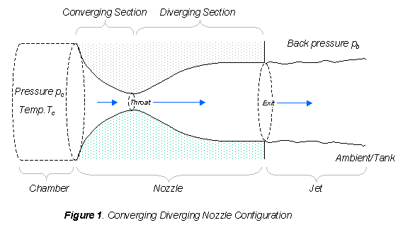
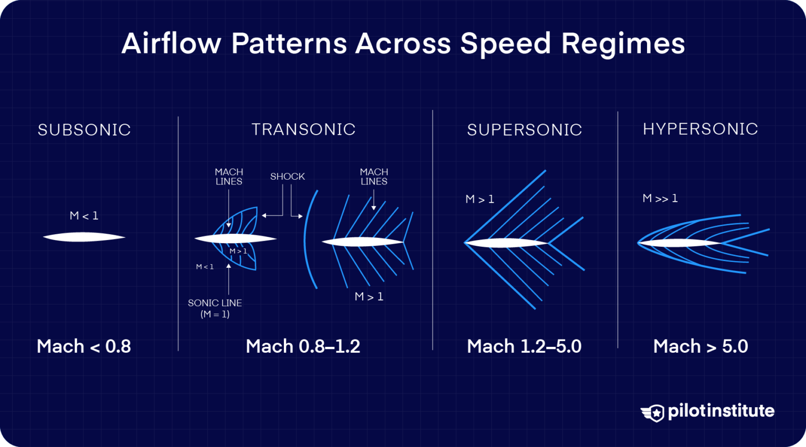
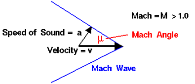
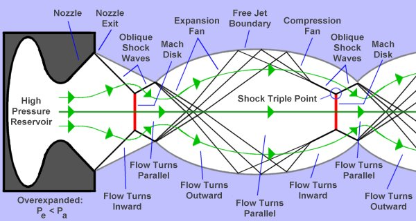
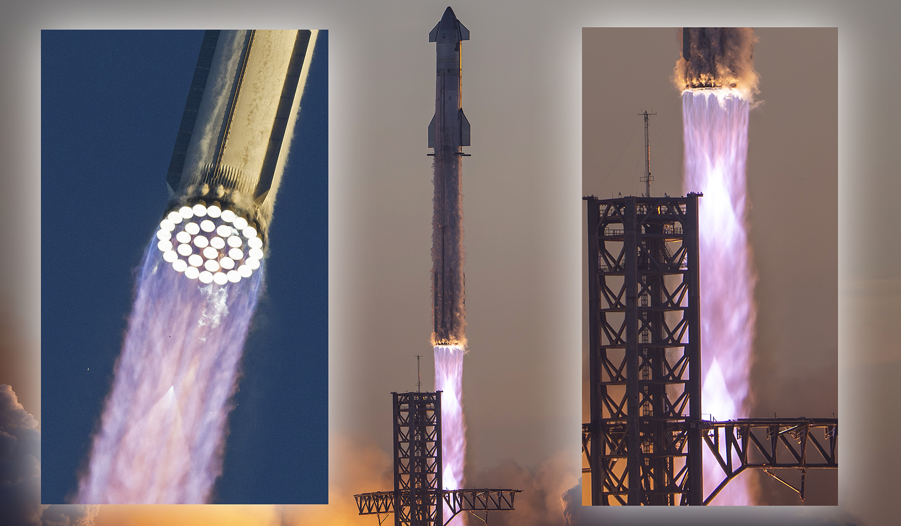
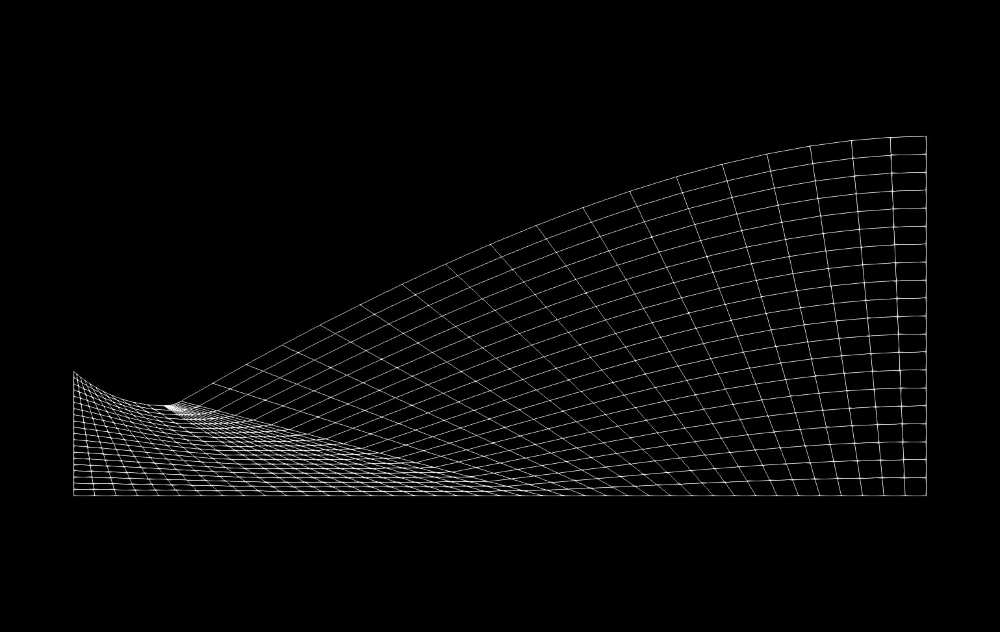
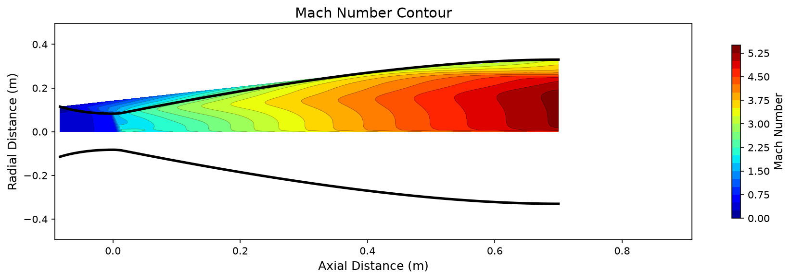

Compressible Flow Theory
Mathematical foundations for rocket nozzle analysis: governing equations, isentropic relations, and shock wave theory.
Governing Equations
Compressible flow in rocket nozzles is governed by the conservation laws of mass, momentum, and energy. For inviscid flow (Euler equations), we neglect viscous effects. For viscous flow (Navier-Stokes), we include boundary layer effects.
Euler Equations (Inviscid)
The Euler equations describe inviscid compressible flow. In conservative form for axisymmetric flow:
Continuity:
$$\frac{\partial \rho}{\partial t} + \nabla \cdot (\rho \mathbf{u}) = 0$$Momentum:
$$\frac{\partial (\rho \mathbf{u})}{\partial t} + \nabla \cdot (\rho \mathbf{u} \otimes \mathbf{u} + p\mathbf{I}) = 0$$Energy:
$$\frac{\partial E}{\partial t} + \nabla \cdot [(E + p)\mathbf{u}] = 0$$where $\rho$ is density, $\mathbf{u}$ is velocity, $p$ is pressure, and $E$ is total energy per unit volume.
Navier-Stokes Equations (Viscous)
The Navier-Stokes equations add viscous stress and heat conduction terms:
Momentum with viscous stress:
$$\frac{\partial (\rho \mathbf{u})}{\partial t} + \nabla \cdot (\rho \mathbf{u} \otimes \mathbf{u} + p\mathbf{I} - \boldsymbol{\tau}) = 0$$Energy with heat flux:
$$\frac{\partial E}{\partial t} + \nabla \cdot [(E + p)\mathbf{u} - \boldsymbol{\tau} \cdot \mathbf{u} - q] = 0$$where $\boldsymbol{\tau}$ is the viscous stress tensor and $q$ is heat flux. For Newtonian fluids, $\boldsymbol{\tau} = \mu[\nabla \mathbf{u} + (\nabla \mathbf{u})^T] - \frac{2}{3}\mu(\nabla \cdot \mathbf{u})\mathbf{I}$.
Note: This project uses SU2 to solve these equations numerically. The Euler solver is used for initial design exploration, while the RANS SST k-omega model captures viscous boundary layer effects for accurate exit Mach prediction.

Isentropic Relations
For isentropic flow (adiabatic and reversible), the thermodynamic properties are related through the Mach number. These relations are fundamental to nozzle design and performance prediction.
Area-Mach Relation
The most important equation for nozzle design relates the local area $A$ to the throat area $A^*$ and Mach number $M$:
This equation shows that for each area ratio $A/A^*$, there are two solutions: a subsonic ($M < 1$) and a supersonic ($M > 1$) branch. The throat ($A = A^*$) corresponds to $M = 1$.
Diagram: Area-Mach Relation Curve
Plot of A/A* versus Mach number showing the characteristic dual-branch curve with subsonic (M < 1) and supersonic (M > 1) branches meeting at the throat (A/A* = 1, M = 1).
Property Ratios
The stagnation-to-static property ratios for isentropic flow:
Pressure ratio:
$$\frac{p_0}{p} = \left(1 + \frac{\gamma - 1}{2}M^2\right)^{\frac{\gamma}{\gamma - 1}}$$Temperature ratio:
$$\frac{T_0}{T} = 1 + \frac{\gamma - 1}{2}M^2$$Density ratio:
$$\frac{\rho_0}{\rho} = \left(1 + \frac{\gamma - 1}{2}M^2\right)^{\frac{1}{\gamma - 1}}$$where $\gamma$ is the ratio of specific heats (1.4 for air, ~1.2 for combustion gases), subscript 0 denotes stagnation (total) conditions.
Mach Number
The Mach number is the fundamental dimensionless parameter in compressible flow, defined as the ratio of flow velocity to the local speed of sound.
Definition & Regimes
where $a = \sqrt{\gamma R T}$ is the speed of sound, $R$ is the gas constant, and $T$ is the static temperature.
Flow regimes based on Mach number:
- ► M < 0.3: Incompressible (density changes < 5%)
- ► 0.3 < M < 1: Subsonic compressible
- ► M = 1: Sonic (transonic regime)
- ► 1 < M < 5: Supersonic
- ► M > 5: Hypersonic

Mach Angle
For supersonic flow, disturbances propagate along Mach lines at angle $\mu$ to the flow direction:
The Mach angle defines the "cone of silence" ahead of a supersonic body. For $M = 2$, $\mu = 30°$; for $M = 4$, $\mu = 14.5°$. In nozzle flows, Mach waves coalesce to form shock waves when they intersect.

Method of Characteristics
The Method of Characteristics (MoC) is an exact technique for solving 2D supersonic flow problems. It traces the propagation of Mach waves (characteristics) through the flow field.
Principle
In supersonic flow, disturbances propagate along characteristic lines at the Mach angle. The flow properties change across these lines according to compatibility equations.
For 2D irrotational flow, the characteristic relations are:
Along C+ characteristics:
$$d\theta + \frac{\sqrt{M^2 - 1}}{1 + \frac{\gamma - 1}{2}M^2} \frac{dM}{M} = 0$$Along C- characteristics:
$$d\theta - \frac{\sqrt{M^2 - 1}}{1 + \frac{\gamma - 1}{2}M^2} \frac{dM}{M} = 0$$where $\theta$ is the flow angle and $M$ is the local Mach number. These relations allow us to trace the flow from known conditions to unknown regions.
Diagram: Mach Wave Characteristic Network
Network of C+ and C- characteristic lines propagating through a supersonic flow field, showing how Mach waves intersect and flow properties change across each characteristic.
Application: MoC is used in this project to independently compute the exit Mach number for validation. For a 1D nozzle with area ratio $\epsilon = 16$ and $\gamma = 1.4$, MoC gives $M_e = 4.4593$, matching the isentropic solution exactly.
Nozzle Flow Regimes
The relationship between nozzle exit pressure and ambient pressure determines the exhaust plume structure and nozzle performance. Understanding these regimes is critical for nozzle design.
| Condition | Pressure Ratio | Plume Structure | Thrust Effect |
|---|---|---|---|
| Overexpanded | $p_e < p_a$ | Oblique shocks at exit, flow separation possible | Reduced thrust (negative pressure contribution) |
| Perfectly Expanded | $p_e = p_a$ | Parallel exhaust, no shocks or fans at exit | Maximum thrust efficiency |
| Underexpanded | $p_e > p_a$ | Expansion fans at exit, plume expands outward | Reduced thrust (unconverted pressure energy) |
Shock Diamond Formation
When the nozzle is overexpanded or underexpanded, the pressure mismatch creates a wave pattern in the exhaust:
- ► Overexpanded: Ambient pressure compresses exhaust, forming oblique shocks. These shocks reflect off the free shear layer (boundary between exhaust and atmosphere), creating the diamond pattern.
- ► Underexpanded: High exhaust pressure causes expansion fans at the exit lip. These fans reflect off the jet boundary as compression waves, which coalesce into shocks forming the diamond pattern.
The number and spacing of diamonds depends on the pressure ratio, Mach number, and gas properties. More diamonds indicate a larger pressure mismatch.


Optimal Expansion
The exit Mach number for optimal expansion can be computed from the area ratio using the isentropic relation:
For area ratio $\epsilon = A_e / A^*$:
$$\epsilon = \frac{1}{M_e} \left[\frac{2}{\gamma + 1}\left(1 + \frac{\gamma - 1}{2}M_e^2\right)\right]^{\frac{\gamma + 1}{2(\gamma - 1)}}$$The optimal expansion condition is:
$$p_e = p_a \implies M_e = f(\epsilon, \gamma)$$For this project's reference nozzle ($\epsilon = 16$, $\gamma = 1.4$), the isentropic exit Mach is $M_e = 4.4593$.
Normal Shock Relations
Normal shocks are discontinuities that occur in supersonic flow. Across a normal shock, the flow decelerates from supersonic to subsonic, with increases in pressure, temperature, and density.
Rankine-Hugoniot Relations
The conservation laws across a stationary normal shock give:
Mach number relation:
$$M_2^2 = \frac{1 + \frac{\gamma - 1}{2}M_1^2}{\gamma M_1^2 - \frac{\gamma - 1}{2}}$$Pressure ratio:
$$\frac{p_2}{p_1} = 1 + \frac{2\gamma}{\gamma + 1}(M_1^2 - 1)$$Temperature ratio:
$$\frac{T_2}{T_1} = \left[1 + \frac{2\gamma}{\gamma + 1}(M_1^2 - 1)\right] \cdot \left[\frac{2 + (\gamma - 1)M_1^2}{(\gamma + 1)M_1^2}\right]$$Total pressure ratio:
$$\frac{p_{02}}{p_{01}} = \left[\frac{(\gamma + 1)M_1^2}{(\gamma - 1)M_1^2 + 2}\right]^{\frac{\gamma}{\gamma - 1}} \cdot \left[\frac{\gamma + 1}{2\gamma M_1^2 - (\gamma - 1)}\right]^{\frac{1}{\gamma - 1}}$$Subscript 1 denotes conditions upstream (supersonic) and subscript 2 denotes conditions downstream (subsonic). The total pressure ratio $p_{02}/p_{01}$ is always less than 1, indicating entropy increase across the shock.
Diagram: Normal Shock Wave Schematic
Illustration of a stationary normal shock wave with upstream supersonic conditions (M1, p1, T1) transitioning to downstream subsonic conditions (M2, p2, T2), showing property discontinuities across the shock front.
Practical Impact: Total pressure loss across shocks reduces nozzle efficiency. A normal shock at $M = 4$ causes a 14.5% total pressure loss. This is why shock diamonds are associated with thrust loss in overexpanded nozzles.
Example: Normal Shock at M = 2
| Property | Upstream (1) | Downstream (2) | Ratio |
|---|---|---|---|
| Mach number | 2.000 | 0.5774 | - |
| Pressure ratio ($p_2/p_1$) | 1.000 | 4.500 | 4.50x |
| Temperature ratio ($T_2/T_1$) | 1.000 | 1.6875 | 1.69x |
| Total pressure ratio ($p_{02}/p_{01}$) | 1.000 | 0.7209 | 27.9% loss |
Methodology
The computational pipeline integrates geometry generation, structured mesh generation, finite-volume CFD simulation, and multi-method validation. Each stage is parameterized and reproducible.
Nozzle Geometry
Rao parabolic bell nozzle contours are generated using quadratic Bezier curves with circular entrant and exit arcs, implementing the thrust-optimized parabolic (TOP) nozzle specification. The geometry is fully parameterized by throat radius, expansion ratio, convergent angle, and bell length fraction.
The contour defines the nozzle wall profile from chamber inlet through the converging section, throat, and diverging bell to the exit plane. Configurable parameters include the throat radius of curvature, the convergent half-angle (typically 30-45 degrees), and the divergent bell length as a fraction of an equivalent 15-degree cone.

Mesh Generation
Structured O-grid meshes are produced via Gmsh transfinite meshing with geometry-aware key point placement. Key points are placed at actual section transitions (entrant arc start, throat, exit arc end, bell transitions) rather than using index arithmetic.
Bump distribution clusters cells near the throat where curvature is highest, resolving the rapid flow acceleration from subsonic to supersonic. Boundary layer refinement ensures adequate resolution of viscous effects for RANS simulations.
| Engine | Mesh | CFL | Back Pressure |
|---|---|---|---|
| Merlin 1D | 40x20 | 0.1 | Sea level |
| Raptor SL | 50x25 | 0.1 | Sea level |
| RS-25 | 60x30 | 0.05 | Vacuum (100 Pa) |
| RL10B-2 | 80x40 | 0.03 | Vacuum (100 Pa) |

CFD Solver Settings
Both inviscid Euler and Reynolds-Averaged Navier-Stokes (RANS) simulations are conducted using SU2 v8.4.0. The solver configuration follows established practices for compressible nozzle flow:
| Setting | Euler | RANS |
|---|---|---|
| Solver | SU2 EULER | SU2 RANS SST k-omega |
| Axisymmetric | YES | YES |
| Flux | ROE | ROE |
| MUSCL | NO | NO |
| Wall | Slip wall (EULER) | Adiabatic, no-slip |
| Turbulence | N/A | SST k-omega |
| Freestream | N/A | Chamber conditions (P, T, M=0.01) |
The RANS SST k-omega turbulence model is selected for its robustness in adverse pressure gradient flows and its ability to resolve the near-wall boundary layer without requiring explicit wall functions.
Validation Approach
Triple validation methodology compares CFD results against two independent analytical methods:
- ► Isentropic Relations: Closed-form area-Mach relations provide the theoretical exit Mach number for a given expansion ratio and gamma. This is the baseline reference.
- ► Method of Characteristics: Exact technique for 2D supersonic flow that traces Mach wave propagation through the flow field. For 1D nozzle approximations, matches isentropic results exactly.
- ► SU2 CFD: Numerical solution of the governing equations. Euler for inviscid baseline, RANS for viscous correction.

Grid Convergence Index: Mesh independence is confirmed per ASME V&V 20-2009 using three mesh levels (coarse, medium, fine) with refinement ratio r=2. The GCI quantifies discretization error and ensures solutions are in the asymptotic convergence range.
Project Structure
The codebase is organized as a modular Python pipeline with clear separation between geometry, meshing, solving, post-processing, and validation.
rocket-nozzle-cfd/ src/nozzle/ # Geometry (config, presets, contour) src/cfd/ # SU2 mesh & solver src/validation/ # Isentropic, MoC, GCI src/sweep/ # Parametric sweeps src/viz/ # Contour, convergence, annotated geometry, 3D surface src/pipeline/ # Per-engine pipeline orchestration src/pinn/ # PINN surrogate model tests/ # 287 tests docs/ # Portfolio HTML site run_merlin.py # Merlin 1D: all steps run_raptor.py # Raptor SL: all steps run_rs25.py # RS-25: all steps run_rl10b2.py # RL10B-2: all steps run_all.py # All engines run_euler_spike.py # Quick convergence test run_pinn.py # PINN training/prediction
How to Run
The pipeline uses uv for dependency management. Each engine has a dedicated run file with a --step flag for selective execution.
# Install dependencies uv run sync # Per-engine pipeline uv run python run_merlin.py # All steps uv run python run_merlin.py --step geometry # Just geometry uv run python run_merlin.py --step euler # Just Euler uv run python run_merlin.py --step rans # Just RANS # All engines uv run python run_all.py # Tests uv run pytest tests/ -v
| Engine | Mesh | CFL (Euler) | Back Pressure |
|---|---|---|---|
| Merlin 1D | 40x20 | 0.1 | Sea level |
| Raptor SL | 50x25 | 0.1 | Sea level |
| RS-25 | 60x30 | 0.05 | Vacuum (100 Pa) |
| RL10B-2 | 80x40 | 0.03 | Vacuum (100 Pa) |
References
- ► Anderson, J.D. "Modern Compressible Flow"
- ► Sutton, G.P. & Biblarz, O. "Rocket Propulsion Elements"
- ► Shapiro, A.H. "The Dynamics and Thermodynamics of Compressible Fluid Flow"
- ► ASME V&V 20-2009 (Grid Convergence Index)
- ► SU2 Documentation: su2code.github.io